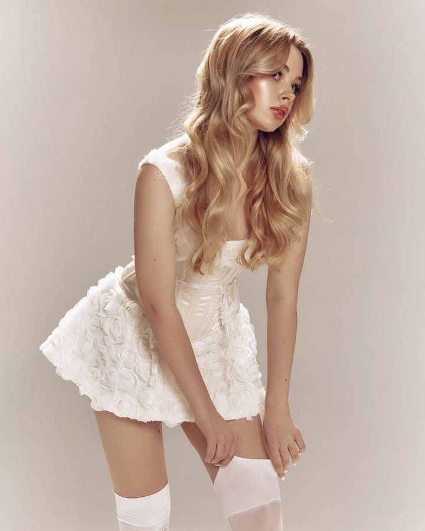
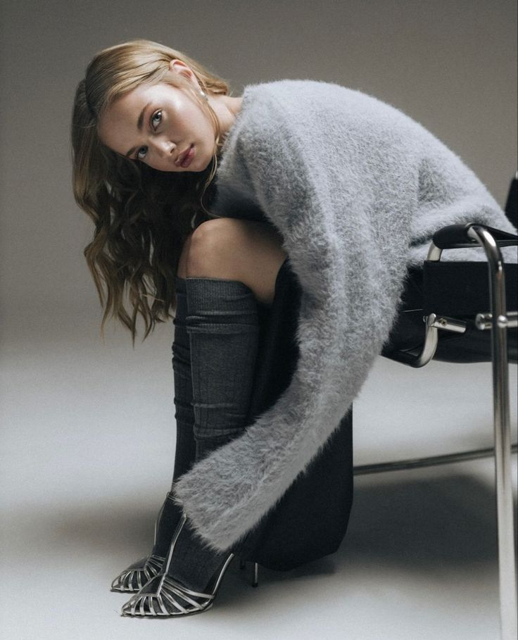

True beauty is not something we search for outside; it is a light we must discover within. As a person finds themselves—understanding who they are, what they believe in, and what they value—they also redefine beauty. Beauty is not what we see in the mirror, but the harmony we feel in our hearts. To accept oneself, to make peace with imperfections, and to walk one’s own

